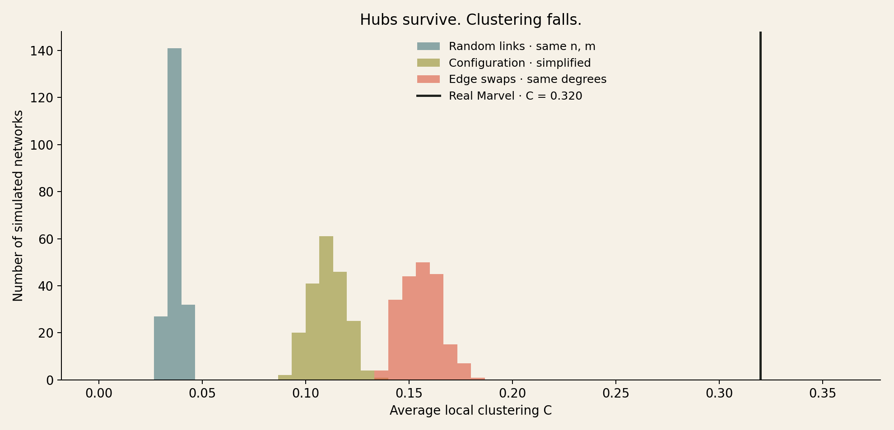

Group exercise 2.11 · Marvel under a shuffle
Hubs survive.
Clustering falls.
Marvel's neighbours are unusually well connected to each other. Is that just what happens when a network has a few enormous hubs? Keeping every character's number of connections says: no, not in these shuffles.
01 · The question
Is it just
the hubs?
A character's number of neighbours is its degree. A hub has many neighbours. But a hub by itself does not guarantee that those neighbours link to each other: a star has a highly connected centre and no triangles at all.
We ask whether Marvel has more neighbour-to-neighbour connections than we would expect even after keeping every character's degree fixed. This is a question about the arrangement of links, not just how many links each character has.
What exactly are we measuring?
For each character, count the links between its neighbours and divide by the number that could exist. This fraction is its local clustering coefficient. With four neighbours, six neighbour-pairs are possible; if three pairs are linked, the coefficient is 3/6 = 0.5.
Our statistic, C, is the average of that fraction across all 277 characters. Characters with fewer than two neighbours contribute zero. Every character gets equal weight; this is not the same as pooling all neighbour-pairs across the network, which gives more weight to hubs.
C = average of [links between neighbours ÷ possible neighbour-pairs]
02 · A fair comparison
Choose what
stays fixed.
A random comparison network is a null model: it asks what could happen without a particular kind of structure. Different rules answer different questions. We generated 200 networks under each of these three rules.
- Random links — keep only size. Choose exactly 1,421 distinct links at random among the same 277 nodes, using G(n, m). This keeps network size and density, but not individual degrees. It is the fixed-edge-count random-graph baseline.
- Edge swaps — keep every degree. Replace two links A–B and C–D with A–C and B–D, accepting only valid swaps without self-links or duplicate links. Each node keeps its number of neighbours, while who connects to whom changes. This is our main comparison.
- Configuration model, then simplify — a cautionary comparison. Give each node one loose end for each required link and pair the ends randomly. Initially, this preserves degrees but can create self-links and multiple links between a pair. We remove self-links and merge duplicates to match the real graph's simple form. That cleanup no longer preserves degrees.
Data scope and simulation settings
We use the unchanged course Week 1 snapshot: 303 Wikipedia articles and 1,784 directed links. We load the full roster first, including 17 isolated characters. A link in either direction becomes one undirected link, giving 1,434 links in total.
We then select the largest connected group (giant component) once: 277 nodes and 1,421 links. The other 26 characters are outside the scope of this analysis, not accidentally lost while loading. All null networks retain these same 277 nodes, including any that become isolated; we do not extract a new giant component after shuffling or force the null networks to stay connected.
Each main shuffle starts from the real graph and performs 14,210 successful swaps (10 times its link count), with its own seed. We also run 30 longer shuffles with 71,050 successful swaps each. The master seed is 280502. Every per-run seed and result is saved.
03 · The results
The real network
stands apart.

| Network / model | Runs | Mean C | Standard deviation | At least as high as real |
|---|---|---|---|---|
| Real Marvel | 1 | 0.31995 | — | — |
| Random links | 200 | 0.03711 | 0.00314 | 0 / 200 |
| Degree-preserving swaps | 200 | 0.15580 | 0.00929 | 0 / 200 |
| Simplified configuration | 200 | 0.11070 | 0.00853 | 0 / 200 |
The main result: real clustering is about 2.05 times the degree-preserving mean, a difference of 0.16415. Preserving the degrees gives a much higher baseline than random links, but it still does not reproduce the real value. There is additional triangle-related structure in how these Wikipedia articles connect.
The real value is 17.68 simulated standard deviations above the degree-preserving mean (z-score). That describes the distance; we do not turn it into a tiny normal-distribution tail probability. Our preselected one-sided question is whether real C is higher. None of 200 shuffles reaches it, so the corrected simulation-based (empirical) p-value is (0 + 1)/(200 + 1) = 0.00498, not zero. This is the smallest value this number of simulations can report, not the probability that the null model is true.
The longer-shuffle check gives C = 0.15351 with standard deviation 0.00910 across 30 runs. It supports the same qualitative conclusion. It is a sensitivity check, not proof that the swap process has fully explored every eligible network; the shuffle-based inference remains conditional on adequate randomisation.
04 · The surprise
A cleanup
changes the test.
The simplified configuration model looked like a second degree-preserving comparison. It was not. Cleanup removed an average of 103.35 links per network — 7.27% of the real link count. The node that had 106 neighbours in the real graph had only 76.83 on average afterwards.
This is why checking what a model actually preserves matters. Calling this cleaned-up model “same degrees” would be wrong. Its average clustering of 0.11070 is lower than the swap baseline's 0.15580, making the apparent excess look larger.
Inspect a baseline
- Mean clustering
- Mean links lost
- Original hub's mean degree
These controls show the saved simulation results; they do not generate new networks.
05 · What it means
More than
popularity.
What survives: every character's degree, including the biggest hub's 106 neighbours, survives the edge swaps exactly. What falls: the tendency for those neighbours to link to each other. Degree alone is therefore not a sufficient account of the clustering observed in this snapshot under our chosen shuffle model.
It is tempting to say that teams, shared storylines, or editorial conventions create the extra triangles. Those are plausible explanations, not findings of this test. A Wikipedia hyperlink is not evidence of friendship or even a comic-book interaction. We have discarded link direction, analysed one component and one snapshot, and have not identified communities or tested a mechanism that generates them.
Nor can we assign a causal percentage of clustering to “the hubs” by subtracting these baselines. Changing the randomisation rules changes several structural features together.
What we would try next: identify the most triangle-rich neighbourhoods and inspect the linked articles. Then test whether a model that also preserves independently defined team memberships gets closer to the observed clustering.
06 · Open the workings
Rerun it.
Question it.
The numbers and chart were computed for this post, not copied from the course's reference answers. The notebook reruns the same analysis and contains saved outputs. The script checks the input counts and confirms that every edge-swap network preserves every degree.
- Read the executed notebook on GitHub · download notebook
- Analysis script · pinned dependencies
- All 630 simulation runs (CSV) · Summary, versions and input hashes (JSON)
- Original node roster · original directed links
Reference: Sune Lehmann's 2026 Week 2, exercise 2.11, and its section on shuffle tests. Implementation: NetworkX edge swaps and configuration model.
AI assistance: Codex helped formulate the analysis, write and run the code, and draft this post. The frozen inputs, per-run results and executable methods are published so the claims can be checked.